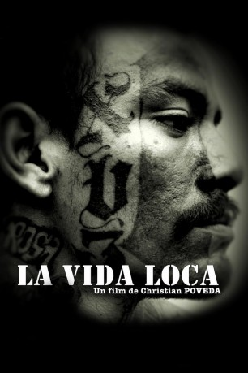

#11517 La Vida Loca - Die Todesgang
 
 IMDB-Wertung: 6.8 / 10
IMDB-Wertung: 6.8 / 10  Metascore: 0
Metascore: 0 
Die Todfeinde der Mara 18 sind die Gangster der Mara Salvatrucha. Wenn man sich trifft, dann ermordet man sich. Es gibt keine religiösen oder ethnischen Gründe für die Feindschaft. Jeder Mord ist die Vergeltung für einen anderen. Die meisten Bandenmitglieder haben keine Idee, wie es eigentlich dazu kam, und erst recht keine Vorstellung, wie der Konflikt jemals enden könnte, außer mit der vollständigen Vernichtung einer der Parteien. Die Repräsentanten der Staatsgewalt denken ähnlich: Erst wenn die Jugendbanden zerschlagen sind, können Ruhe und Ordnung wieder hergestellt werden. Ständige Razzien der Polizei scheinen das Mittel der Wahl und festigen bei den Bandenmitgliedern die Vorstellung von der Unabänderlichkeit ihres Outlaw-Status.
Jahr: 2008
Dauer: 90 Minuten
FSK: 16
Land: Spanien Studio: Ascot Elite Home EntertainmentTonspuren:
Untertitel:
Auflösung: SD (640x336) Größe: 700 MB
Genre: Dokumentation
Regisseur: Christian Poveda
Drehbuch:
Soundtrack: Sebastian Rocca
Darsteller:
- José Roberto Martínez als Himself - Mara Member
- Silvia Portillo López als Herself - Mara Member
- Ana Burgos Arévalo als Herself - Mara Member
- José Luis Rosales als Himself - Mara Member
- Jeaneth Ramírez Villacorta als Herself - Mara Member
- Erik Palacio López als Himself - Mara Member
- Cinthya Cuéllar López als Herself - Mara Member
- Melvin Bonilla Hernández als Himself - Mara Member
- José Hernández Guzmán als Himself - Mara Member
- Daniel Ayala Gutiérrez als Himself - Mara Member
- Carlos Armando Molina als Himself - Mara Member
- César Hernández Escalante als Himself - Mara Member
- Edwin Antonio Llanes als Himself - Mara Member
- Fabio Arévalo Rodríguez als Himself - Mara Member
- Luis Romero Gavidia als Himself - Homies Unidos Member
- José Heriberto Enríquez als Himself - Homies Unidos Member
- Miriam Cabezas Miranda als Herself - Homies Unidos Member
- José Rosa Laguardia als Himself - Physician
- Eduardo Colocho Olivares als Himself - Physician
- Elvin Jerez Hidalgo als Himself - Lawyer
- José Montoya Campos als Himself - Lawyer
- Rodrigo Ávila als Himself - Police Chief
- Aida Santos de Escobar als Herself - Judge
- Patricia Bordales als Herself - Public Officer
- Lydia Flores Granados als Herself - Public Officer
Datei: X:\NEU\La Vida Loca - Die Todesgang (2008, FSK16, 640x336).avi seit 22.07.2019
 Es gibt insgesamt 187 Filme in der Gruppe 'NEU'
Es gibt insgesamt 187 Filme in der Gruppe 'NEU'